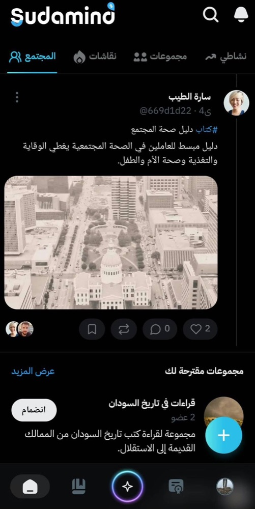
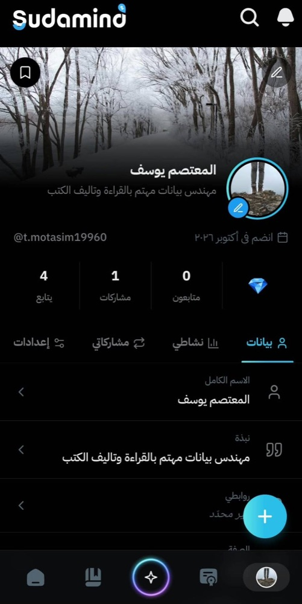
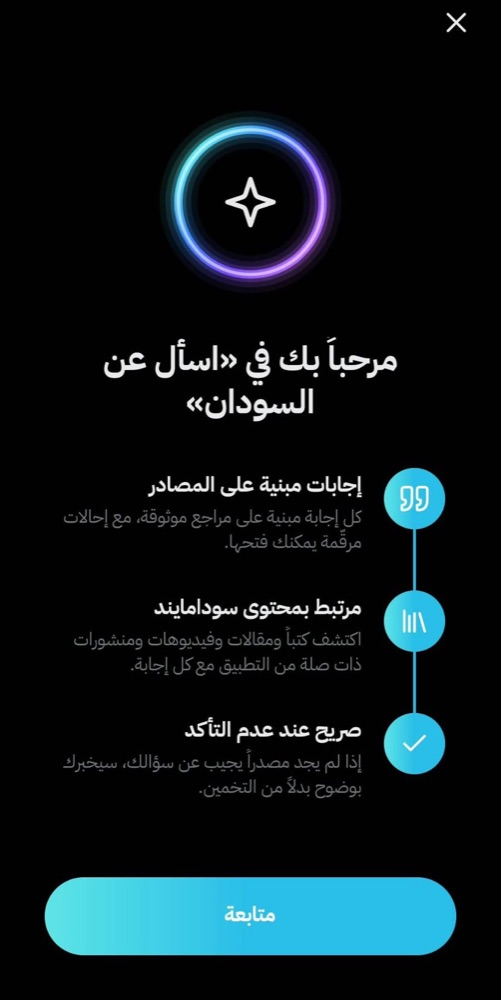

The Atnii Square project
One idea, built as
a complete ecosystem
Atnii Square is a community app for knowledge about Sudan: people share and discuss in a feed and groups, read in a shared library, and ask an AI assistant grounded in trusted sources. Here is how each part was planned, designed, and built.
Atnii Square
Community
A social space to share, discuss, and learn about Sudan together
The heart of the app: a community feed for posts and book recommendations, groups such as “Readings in Sudan’s history”, live discussions, and a personal profile with followers, posts, and activity. Built right-to-left first, with a calm dark interface.
My role
I shaped the community experience from the feed to groups and profiles, designed the core flows, and built the app with the data model and activity tracking behind it.
STACKReact Native · TypeScript · Node.js · PostgreSQL · Push notifications · RTL


Ask about
Sudan
An AI assistant that answers from trusted sources, not guesses
Ask about Sudan answers questions with answers grounded in reliable references and numbered citations you can open. Each answer links to related books, articles, videos, and posts inside Atnii Square, and when no source covers a question, it says so clearly instead of guessing.
My role
I designed the retrieval pipeline behind the assistant: preparing and indexing Atnii Square’s content, grounding every answer in sources, and linking results back to the app.
STACKPython · RAG · Embeddings · Vector search · LLM APIs · PostgreSQL

Atnii Square
Library
Books, articles, and videos about Sudan in one shared library
A library of books, articles, and videos that the community reads together. Items connect to reading groups and discussions, and the AI assistant uses the same library as its trusted sources.
My role
I structured the library content and metadata, built the search and categories, and made it the shared source for both reading groups and the AI assistant.
STACKReact Native · Node.js · PostgreSQL · Full-text search · Metadata
Atnii Square
Data Platform
The data engineering backbone that turns activity into insight
Pipelines collect posts, group activity, library reads, and AI questions, clean and model them in a central warehouse, and power dashboards and the AI assistant’s index. This is where my data engineering work sits at the heart of Atnii Square.
My role
I designed the data architecture end to end: ingestion from the app and content sources, orchestration with Airflow, modeling with dbt, and reporting through Power BI.
STACKPython · SQL · Airflow · dbt · PostgreSQL · Power BI
My role goes
beyond implementation
On Atnii Square I treat the product as one journey: understanding the idea, designing the data behind it, shaping the experience, and building it so it is clear, reliable, and ready to grow.
- 01
Product understanding
Turning the idea into a clear direction and finding what readers and community members actually need.
- 02
Data architecture
Designing how data is collected, modeled, and served so every feature and report can trust it.
- 03
Full implementation
Building the apps, dashboards, and pipelines, and keeping the code maintainable and scalable.
- 04
Delivery refinement
Polishing details, performance, and motion so the product feels ready for real use.
Have an idea worth
building properly?
Whether it is an app, a website, a data platform, or a complete digital product, I can help turn it into something clear, usable, and ready to grow.